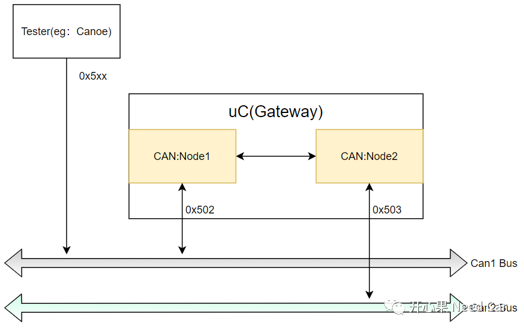
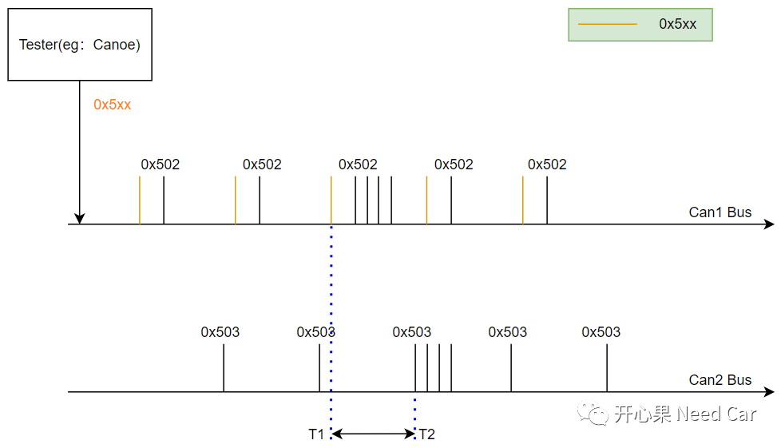

开心果 Need Car · 2022-02-19T09:49:00+08:00 · 微信原文
Autosar网络管理中，如果节点是网关节点，对开发和测试来说都是不小的挑战，如果对需求解读不到位，开发架构设计错误，后期的测试也就bug bug bug...
本文针对网关节点（包含PNC功能）解读路由需求以及开发注意事项。本文讨论的内容涉及PN（Partial Network）功能，本文源于工程实际，还是能给大家点启发的。
提示：基于can总线讨论
提示：
Node1和Node2是主动激活节点，即两个Node均具有快发模式;
PNC1和PNC2均关联Can1和Can2。
这里我们从测试角度分析需求应该如何测试。
举例分析：上位机（Tester）模拟发送一帧网络管理报文0x5xx（网络管理报文有效范围：0x500~0x53F）到Can1 Bus，Can1 Node收到这帧网络管理报文以后，内部转发给Can2 Node（实际由ComM判断PNC，进而决定哪些Node网络状态切换）。在Normal Mode模式下，Node1会发送网络管理报文0x502到Can1 Bus，Node2会发送网络管理报文0x503到Can2 Bus。

Tester发送仅包含PNC1的网络管理报文0x5xx；

Node1和Node2的唤醒与PNC相关，与应用报文的路由不要混为一谈。PNC关联哪些Node，ComM会请求哪些Node的网络状态切换，而应用报文的路由可以通过PDUR进行PDR级别路由或者Com层的信号（Signal）路由；
配置参数CanNmPnHandleMulti勾选；
网络管理有PN功能时，ComM负责调用CanNm_NetworkRequest()接口。
往期精彩回顾